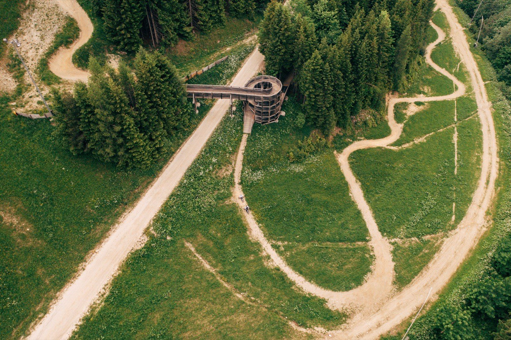
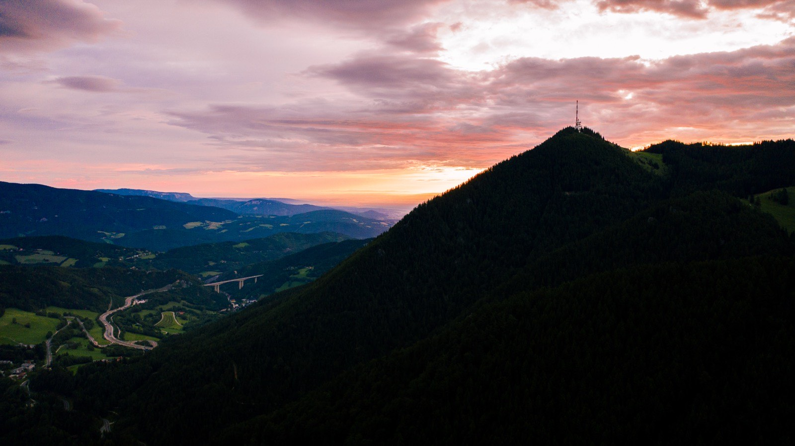
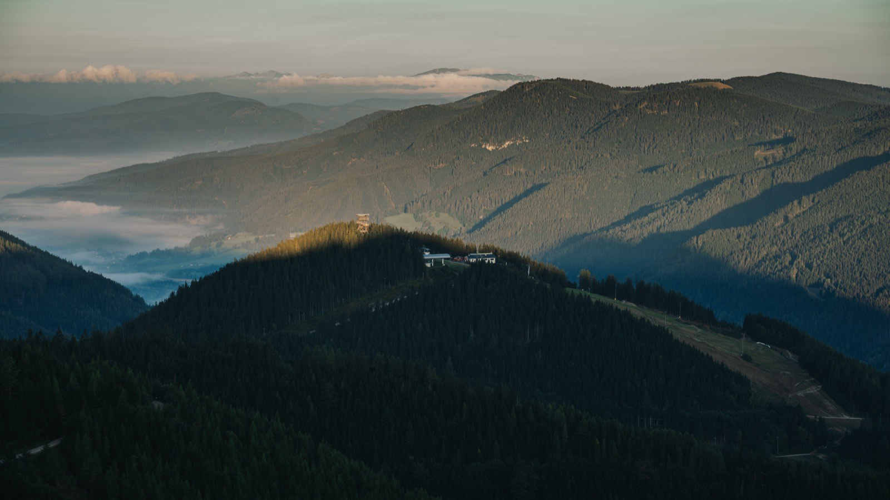
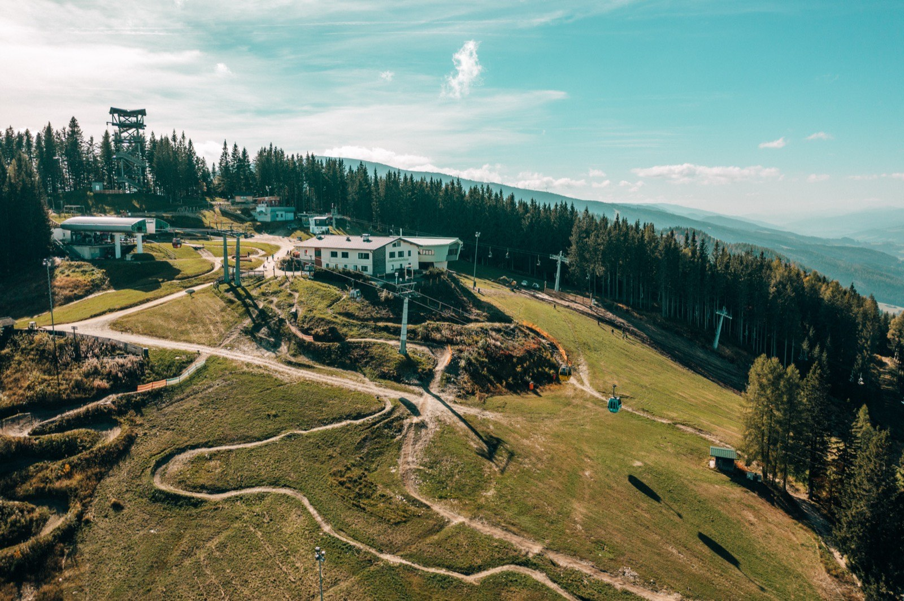
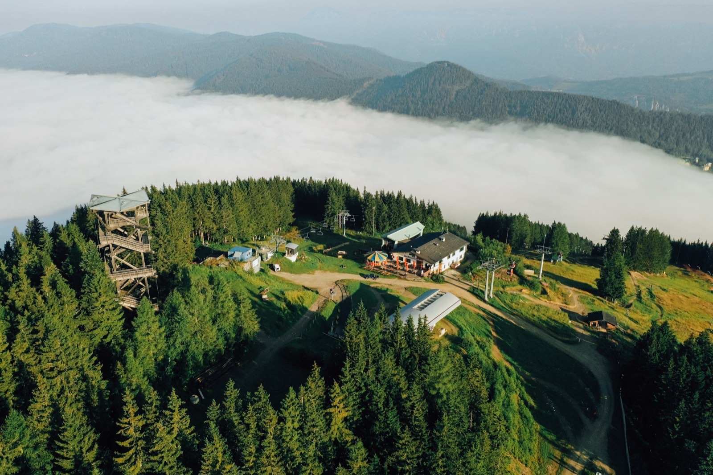
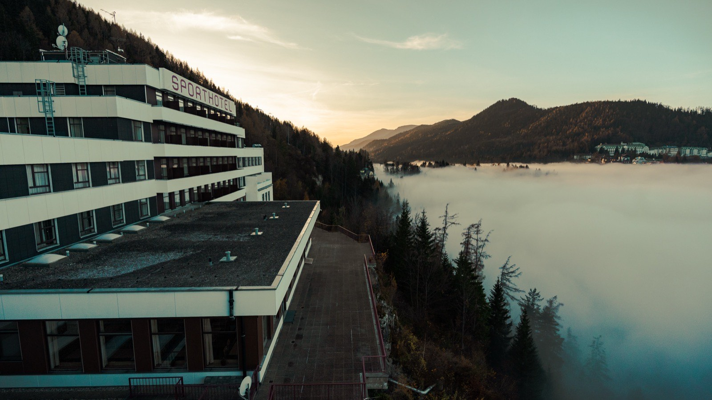

Wandern & BahnwanderwegHiking & railway trail
Markierte Bergrouten rund um Semmering & Rax — und der Bahnwanderweg entlang der UNESCO-Welterbe-Semmeringbahn.Marked mountain routes around Semmering & Rax — and the railway trail along the UNESCO World Heritage Semmering railway.
Dein Ticket für den WandertagYour ticket for a day of hiking
Berg&Tal-KarteUp & down ride
Jugend/Senioren 25 € · Kinder 20 € · 0–5 J. gratis. Bahn- & Bergerlebnis: inkl. Millenniumswarte, Hirschi-Spielplatz & Wanderrouten.Youth/seniors €25 · children €20 · under-6s free. Full mountain experience: incl. Millenniumswarte, Hirschi playground & hiking routes.
Berg&Tal kaufenBuy up & downEinzelfahrt BergSingle ride up
Mit der Kabinenbahn rauf, zu Fuß zurück ins Tal — oder umgekehrt. Jugend/Senioren 19 €, Kinder 16 €.Take the cable car up and walk back down — or the other way round. Youth/seniors €19, children €16.
Alle PreiseAll pricesNiederösterreich-CARDLower Austria Card
Einmal pro Sommersaison: Berg- & Talfahrt mit der Kabinenbahn plus Waldseilgarten-Eintritt gratis — an der Liftkassa einlösen.Once per summer season: a free cable-car return ride plus ropes-park entry — redeem at the lift till.
Mehr zu PartnerkartenMore on partner cardsWandern am Semmering in BildernHiking at the Semmering in pictures






Schritt für Schritt über den Berg.Step by step across the mountain.
Gut zu wissenGood to know
Wanderrouten — Distanz, Dauer & HöhenmeterHiking routes — distance, time & vertical
Panoramawandern Sonnwendstein–Hirschenkogel — 11,5 km · 4 Std · 703 hm · mittel (über Pollereshütte, Bergkircherl 1.523 m & Erzkogel).
Wallfahrtsrunde Semmering–Maria Schutz — 7,7 km · 2½ Std · 274 hm · mittel (Kirche & Lourdes-Grotte).
Kummerbauerstadl-Tour — 16,5 km · 5¾ Std · 800 hm · leicht.
Semmeringer Zauberblickrunde — 10 km · 3 Std · 250 hm · leicht.
Gebirgsjäger-Steig — 12,5 km · 4 Std · 770 hm · mittelschwer (aktuell gesperrt).
Dazu ein gemütlicher Spaziergang mit Teichumrundung (Panhanswiese → Beschneiungsteich → Passhöhe). Hirschenkogel / Millenniumswarte — 7 km · 2 h · 344 m · easy (from the valley station up a 3.5 km forest road to the summit 1,340 m, stop at the Liechtensteinhaus).
Panorama hike Sonnwendstein–Hirschenkogel — 11.5 km · 4 h · 703 m · medium (via Pollereshütte, Bergkircherl 1,523 m & Erzkogel).
Pilgrim loop Semmering–Maria Schutz — 7.7 km · 2½ h · 274 m · medium (church & Lourdes grotto).
Kummerbauerstadl tour — 16.5 km · 5¾ h · 800 m · easy.
Semmering Zauberblick loop — 10 km · 3 h · 250 m · easy.
Gebirgsjäger trail — 12.5 km · 4 h · 770 m · moderate (currently closed).
Plus an easy walk with a pond loop (Panhanswiese → snowmaking pond → pass).
Bahnwanderweg (NÖ)Railway trail (Lower Austria)
Bahnwanderweg (Steiermark)Railway trail (Styria)
Gipfel & EinkehrSummit & dining
Passt gut dazuGoes well with
Dein Schlüssel zum Gipfel: Spielplatz, Goldwaschen, Streichelzoo, Aussicht & Events — plus Waldseilgarten & Mountaincart-Abfahrt. 55 € statt einzeln 87 € (Erw.) · Kinder ab 28 €.Your key to the summit: playground, gold panning, petting zoo, views & events — plus ropes park & mountain-cart run. €55 instead of €87 separately (adults) · kids from €28.
Häufige FragenFrequent questions
Alle FAQs für Sommer & Winter →All FAQs for summer & winter →
Wohin als Nächstes?Where to next?